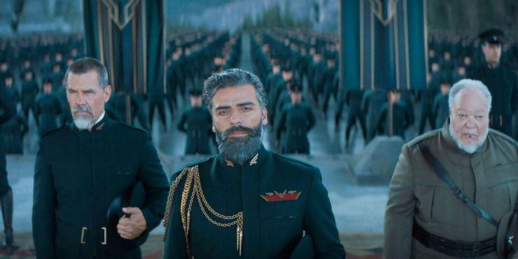

Galería de fotos

Chani

Duncan Idaho

Gurney Halleck
Thufir Hawat

Gaius Helen Mohiam

Jessica Atreides

Liet-Kynes

Leto Atreides

Paul Atreides

Stilga

Vladimir Harkonnen

Wellington Yueh
Tabla de personajes
| Nombre | Planeta donde ha vivido | Casa a la que pertenece | ¿Muerto? | Caracteristicas especiales | Foto |
|---|---|---|---|---|---|
| Chani | Arrakis | Fremen | No | Ninguna | |
| Duncan Idaho | Giedi Prime/Caladan/Arrakis | Trabaja para los Atreides | Sí | Ninguna | |
| Gurney Halleck | Giedi Prime(esclavo)/Caladan/Arrakis | Maestro de guerra de la casa Atreides | Sí | Ninguna | |
| Thufir Hawat | Caladan/Arrakis | Responsable de la seguridad de los Atrides | Sí | Mentat | |
| Madre Gaius Helen Mohiam | Caladan, visitando a Jessica y Paul | Reverenda Madre de las Bene Gesserit | No | Es una Bene Gesserit... | |
| Jessica Atreides | Caladan/Arrakis | Atreides, es la concubina de Leto y madre de Paul | No | Es una Bene Gesserit... | |
| Liet-kynes | Arrakis | Planetólogo, ecólogo imperial, juez del cambio y lider secreto de los Fremen hasta la llegada de los Atrides | Sí | ¿Un basto conocimiento? | |
| Leto Atreides | Caladan/Arrakis | Duque de la casa Atreides | Sí | Ninguna | |
| Paul Atreides | Caladan/Arrakis | Hijo de Leto y el siguiente duque de la casa Atreides tras su muerte | No | Es el Muad'Dib, Usul y El Profeta. Una especie de Mesias dopado | |
| Stilgar | Arrakis | Líder del Sietch Tabr | No | Ninguna | |
| Vladimir Harkonnen | Giedi Prime/Arrakis | Señor de la casa Harkonnen | No | Unos suspensores que le permiten andar debido a su sobrepeso | |
| Yueh Wellington | Caladan/Arrakis | Médico suk y agente del barón Vladimir Harkonnen que sirvió a House Atreides | Sí | Las capacidades de un medico suk | |